[1]:
import anndata as ad
import pandas as pd
from itertools import combinations
import numpy as np
# Number of cores to use
ncores = 64
import sys
import anndata
#from netmap.downstream import final_downstream
from netmap.downstream.edge_selection import *
from netmap.downstream.clustering import *
#from netmap.downstream.final_downstream import *
from netmap.downstream.plotting import *
from netmap.downstream.regulon import *
import warnings
from netmap.utils.data_utils import *
from netmap.utils.tf_utils import *
from netmap.utils.netmap_config import NetmapConfig
from netmap.model.train_model import create_model_zoo
from netmap.grn.inferrence import inferrence, inferrence_model_wise
from netmap.masking.internal import *
from netmap.masking.external import *
import scipy.sparse as scs
import numpy as np
from pathlib import Path
[ ]:
# Load data
# Collectri is in ressource folder
collectri = pd.read_csv('resources/collectri.tsv', sep = '\t')
# This is the preprocessed anndata object.
adata_raw = sc.read_h5ad('netmap/data/blood/reprocessed/bd-rhap-rep1.h5ad')
experiment_name = 'bd-rhap-rep1-X'
# The dummy anndata object
output_dir = f"netmap/case_studies/blood/{experiment_name}/"
var = pd.read_csv(op.join(output_dir, f'{experiment_name}_var.tsv'))
obs = pd.read_csv(op.join(output_dir, f'{experiment_name}_obs.tsv'))
grn_adata = ad.AnnData(shape = (obs.shape[0], var.shape[0]), var = var, obs = obs,)
[ ]:
output_dir = Path(op.join(output_dir, "grn"))
[ ]:
# Load top 10% edges for data object
grn_adata = retrieve_top_edges(grn_adata, output_dir, percentage=0.1 )
[7]:
adata_raw.layers['counts']
[7]:
<Compressed Sparse Column sparse matrix of dtype 'float32'
with 2990346 stored elements and shape (10925, 1176)>
[8]:
sc.pl.umap(adata_raw, color = ['celltype_semi_manual', 'leiden'])
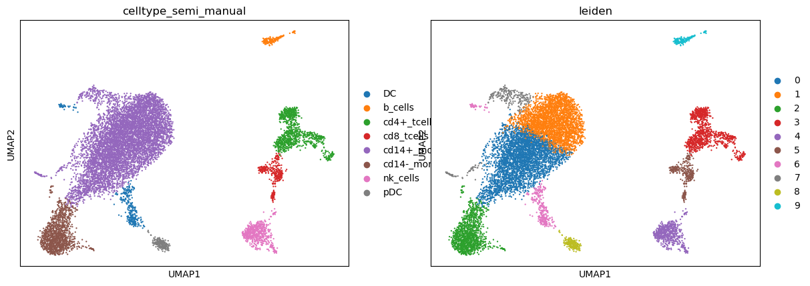
[ ]:
grn_adata.var = grn_adata.var.set_index('index')
[ ]:
#Cluster GRN
sc.tl.pca(grn_adata, svd_solver = 'randomized', zero_center = False)
sc.pp.neighbors(grn_adata, n_neighbors = 50)
sc.tl.umap(grn_adata, n_components =50)
[ ]:
# number of clusters should be equal to GEX anndata object (or smaller)
sc.tl.leiden(grn_adata, resolution=0.18)
[12]:
sc.pl.umap(grn_adata, color = 'leiden')
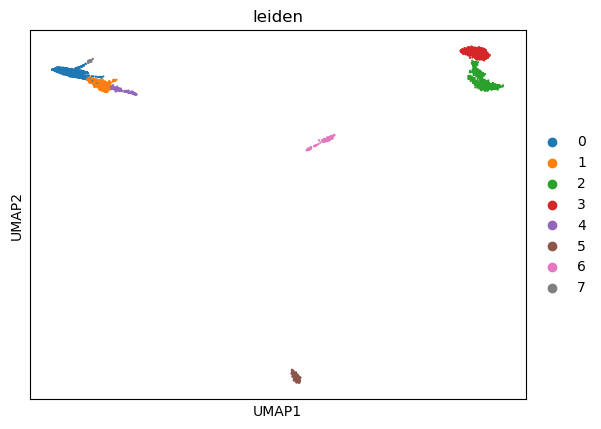
[13]:
print("\nClustering Score Evaluation")
for col_grn in ["leiden"]:
score = unify_group_labelling( adata_raw, grn_adata, 'celltype_semi_manual', col_grn)
print(f"{col_grn} score: {score}")
Clustering Score Evaluation
leiden score: 0.9533180778032037
[ ]:
# Transcfer the new labels to the GEX andata object.
adata_raw.obs['celltype_remapped'] = grn_adata.obs['leiden_remap'].values
[15]:
sc.pl.umap(adata_raw, color = ['celltype_remapped', 'celltype_semi_manual'])
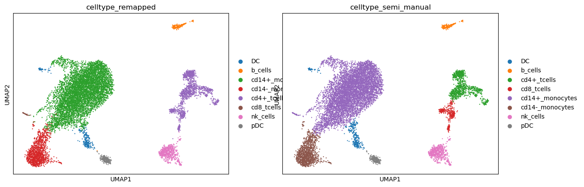
[ ]:
# Make a dummy GRN object
grn_adata2 = ad.AnnData(shape = (obs.shape[0], var.shape[0]), var = var, obs = obs)
grn_adata2.var = grn_adata2.var.set_index('index')
grn_adata2.obs = grn_adata.obs
[ ]:
[ ]:
# Select plausible edges based on the gene expression dataset
add_neighbourhood_expression_mask(adata_raw, grn_adata2, strict=False, layer = 'counts' )
# Annotate edges which CAN be present in at least 0.3 based on gene expression mask
grn_adata2 = add_cluster_based_candidate_edges(grn_adata2, threshold=0.3)
[ ]:
# Select edges which are candidates in at least one cluster
index_list = np.where(grn_adata2.var['candidate_edge'])[0]
# Select plausible edges and load them into a new anndata obeject.
grn_adata3 = retrieve_edges_by_index(grn_adata2, output_dir, index_list)
[20]:
grn_adata
[20]:
AnnData object with n_obs × n_vars = 10925 × 138297
obs: 'Unnamed: 0', 'n_genes_by_counts', 'log1p_n_genes_by_counts', 'total_counts', 'log1p_total_counts', 'pct_counts_in_top_50_genes', 'pct_counts_in_top_100_genes', 'pct_counts_in_top_200_genes', 'pct_counts_in_top_500_genes', 'total_counts_mt', 'log1p_total_counts_mt', 'pct_counts_mt', 'total_counts_ribo', 'log1p_total_counts_ribo', 'pct_counts_ribo', 'total_counts_hb', 'log1p_total_counts_hb', 'pct_counts_hb', 'n_genes', 'doublet_score', 'predicted_doublet', 'predicted_labels', 'majority_voting', 'conf_score', 'granular', 'leiden', 'celltype_semi_manual', 'leiden_remap'
var: 'source', 'target', 'edge_sums', 'edge_means'
uns: 'pca', 'neighbors', 'umap', 'leiden', 'leiden_colors'
obsm: 'X_pca', 'X_umap'
varm: 'PCs'
obsp: 'distances', 'connectivities'
[ ]:
# Transfer the clustering the the new object
grn_adata3.obs = grn_adata2.obs
grn_adata3.obsm['X_pca'] = grn_adata.obsm['X_pca']
grn_adata3.obsm['X_umap'] = grn_adata.obsm['X_umap']
[22]:
sc.pl.umap(grn_adata3, color = ['leiden', 'leiden_remap', 'celltype_semi_manual'])
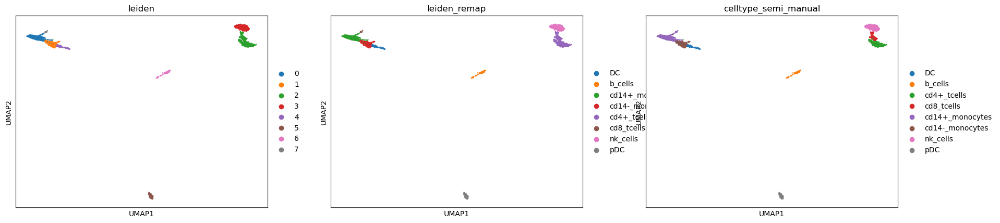
[23]:
sc.pl.umap(adata_raw, color = ['celltype_remapped', 'celltype_semi_manual', 'CD14', ])
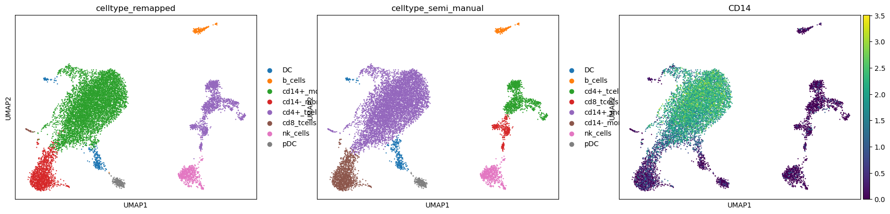
[24]:
cross_tab = pd.crosstab(grn_adata3.obs['celltype_semi_manual'], grn_adata3.obs['leiden_remap'])
[25]:
cross_tab
[25]:
| leiden_remap | DC | b_cells | cd14+_monocytes | cd14-_monocytes | cd4+_tcells | cd8_tcells | nk_cells | pDC |
|---|---|---|---|---|---|---|---|---|
| celltype_semi_manual | ||||||||
| DC | 275 | 0 | 67 | 0 | 0 | 0 | 0 | 0 |
| b_cells | 0 | 165 | 0 | 0 | 0 | 0 | 0 | 0 |
| cd4+_tcells | 0 | 0 | 0 | 0 | 964 | 0 | 0 | 0 |
| cd8_tcells | 0 | 0 | 0 | 0 | 344 | 0 | 3 | 0 |
| cd14+_monocytes | 3 | 0 | 6882 | 54 | 0 | 32 | 0 | 0 |
| cd14-_monocytes | 0 | 0 | 5 | 1307 | 0 | 0 | 0 | 0 |
| nk_cells | 0 | 0 | 0 | 0 | 1 | 0 | 612 | 0 |
| pDC | 0 | 1 | 0 | 0 | 0 | 0 | 0 | 210 |
[ ]:
# This can be used to add is_source_collectri, is_target_collectri to annotate for each edge
# whether the source node of an edge is also in collectri
grn_adata3 = add_external_grn(grn_ad=grn_adata3, external_grn=collectri,name_grn='collectri')
[ ]:
# Identify top targets for each source gene within clusters
# - Keeps up to top_per_source strongest targets
# - Removes regulons smaller than min_reg_size
cluster_column = 'celltype_semi_manual'
top_per_source = 30
min_reg_size = 3
sc.pp.scale(grn_adata3)
add_neighbourhood_expression_mask(adata_raw, grn_adata3, strict=False, layer = 'counts' )
keep_edges = select_top_edges(gene_inter_adata=grn_adata3, adata=adata_raw, top_per_source=top_per_source, col_cluster=cluster_column, min_reg_size=min_reg_size, verbose=True)
# If you want to only use specific genes as sources, e.g. TFs you can add a boolean mask where true
# indicates that the gene should be used as a source.
#keep_edges = select_top_edges(gene_inter_adata=grn_adata3, adata=adata_raw, top_per_source=top_per_source, col_cluster=cluster_column, min_reg_size=min_reg_size, verbose=True, tf_column='is_source_collectri')
Selecting targets for cluster: DC
Selecting targets for cluster: b_cells
Selecting targets for cluster: cd14+_monocytes
Selecting targets for cluster: cd14-_monocytes
Selecting targets for cluster: cd4+_tcells
Selecting targets for cluster: cd8_tcells
Selecting targets for cluster: nk_cells
Selecting targets for cluster: pDC
[28]:
def aggregate_edges(selected_edges, grn_adata, key='unique') -> pd.DataFrame:
"""
Filters gene signatures by cluster and computes UCell scores.
Parameters
----------
grn_adata : AnnData
AnnData object containing GRN (gene regulatory network) information.
adata : AnnData
AnnData object containing gene expression counts in the 'counts' layer.
Returns
-------
pd.DataFrame
DataFrame with UCell scores merged with the 'spectral' cluster labels.
"""
regulons = {}
for ct in selected_edges[key]:
print(ct)
sign = selected_edges[key][ct]['edges'].groupby('source').apply(lambda x: (x['source'] + "_" + x['target']).tolist()).to_dict()
for g in sign:
regulons[f'{ct}_{g}'] = grn_adata[:, sign[g]].X.mean(axis = 1)
regulons = pd.DataFrame(regulons)
return regulons
[31]:
regus = aggregate_edges(keep_edges, grn_adata3, key='unique')
DC
b_cells
cd14+_monocytes
cd14-_monocytes
cd4+_tcells
cd8_tcells
nk_cells
pDC
[32]:
all_signatures = ad.AnnData(X = regus, obs = adata_raw.obs, obsm = adata_raw.obsm)
reguls = compute_signatures_UCell_scores(adata=adata_raw, selected_edges=keep_edges, )
[33]:
# Compute differential regulon activity using the nonparametric Wilcoxon test.
# This identifies regulons whose activity significantly differs between clusters.
sc.tl.rank_genes_groups(all_signatures, cluster_column, method='wilcoxon', key_added = "wilcoxon")
# Visualize the top differentially active regulons per cluster.
# The plot shows effect sizes and significance for the highest-ranked regulons.
sc.pl.rank_genes_groups(all_signatures, n_genes=25, sharey=False, key="wilcoxon")
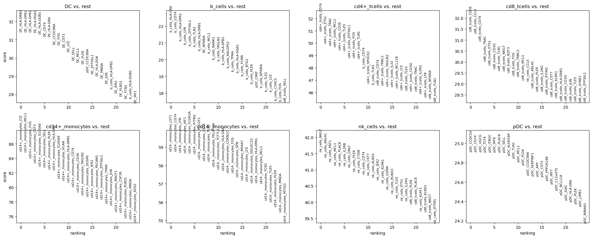
[34]:
pp = rank_regulon_groups_dotplot(grn_adata3, adata_regl=all_signatures, return_fig=True, new_cluster_column=cluster_column, n_genes=10)
WARNING: dendrogram data not found (using key=dendrogram_celltype_semi_manual). Running `sc.tl.dendrogram` with default parameters. For fine tuning it is recommended to run `sc.tl.dendrogram` independently.
[35]:
pp.show()
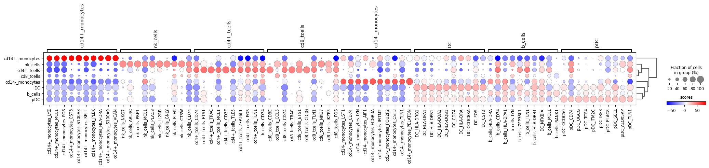
[36]:
# Compute differential regulon activity using the nonparametric Wilcoxon test.
# This identifies regulons whose activity significantly differs between clusters.
sc.tl.rank_genes_groups(adata_raw, cluster_column, method='wilcoxon', key_added = "wilcoxon")
# Visualize the top differentially active regulons per cluster.
# The plot shows effect sizes and significance for the highest-ranked regulons.
sc.pl.rank_genes_groups(adata_raw, n_genes=25, sharey=False, key="wilcoxon")
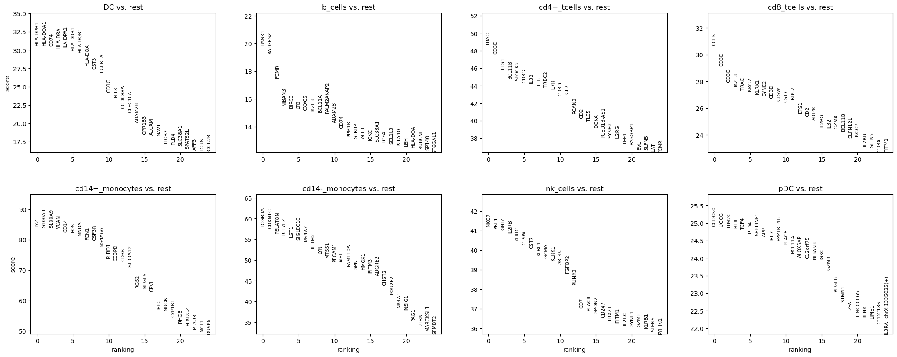
[37]:
import pandas as pd
import numpy as np
import matplotlib.pyplot as plt
from collections import Counter
ranked_terms = bcrank.celltype[0:100]
def calculate_raw_annotated_entropies(terms):
raw_h = []
first_occurrences = []
seen = set()
counts = Counter()
for i, term in enumerate(terms, 1):
if term not in seen:
first_occurrences.append((i, term))
seen.add(term)
counts[term] += 1
probs = [count / i for count in counts.values()]
# Raw Shannon Entropy (H)
h = -sum(p * np.log2(p) for p in probs if p > 0)
raw_h.append(h)
return raw_h, first_occurrences
# Compute values
raw, discoveries = calculate_raw_annotated_entropies(ranked_terms)
ranks = list(range(1, len(ranked_terms) + 1))
# 1. Plotting Raw Entropy Only
fig, ax1 = plt.subplots(figsize=(10, 6))
ax1.set_xlabel('Rank', fontsize=12)
ax1.set_ylabel('Raw Entropy (bits)', fontsize=12)
# Replicating the distinct blue line style
ax1.plot(ranks, raw, linewidth=1.5, label='Raw Entropy (H)')
ax1.tick_params(axis='y' )
ax1.grid(True, linestyle='--', alpha=0.3)
# 2. Annotate Discoveries on the RAW line
for rank, term in discoveries:
# Use raw entropy value for the y-position of the annotation
y_pos = raw[rank-1]
# Add a marker at the point
ax1.scatter(rank, y_pos, color='black', s=30, zorder=5)
# Add annotation text with an offset above the RAW line
ax1.annotate(f'{term}',
xy=(rank, y_pos),
xytext=(rank, y_pos + 0.15), # Increased offset above RAW line
fontweight='bold',
arrowprops=dict(arrowstyle='->', color='black', lw=0.7),
ha='center', fontsize=9, zorder=6)
plt.title('Entropy vs. Rank')
plt.savefig('raw_entropy_annotated.png')
---------------------------------------------------------------------------
NameError Traceback (most recent call last)
Cell In[37], line 6
3 import matplotlib.pyplot as plt
4 from collections import Counter
----> 6 ranked_terms = bcrank.celltype[0:100]
8 def calculate_raw_annotated_entropies(terms):
9 raw_h = []
NameError: name 'bcrank' is not defined
[ ]:
cellmarker = pd.read_csv('/data_nfs/og86asub/netmap/netmap-evaluation/data/markers/Cell_marker_Seq.csv', sep ='\t')
[ ]:
metamarker = pd.read_csv('/data_nfs/og86asub/netmap/netmap-evaluation/data/markers/metamarkers.tsv', sep =',')
[ ]:
metamarker
| Unnamed: 0 | celltype | gene | |
|---|---|---|---|
| 0 | 0 | Mixed | PF4 |
| 1 | 1 | Mixed | CD44 |
| 2 | 2 | Mixed | Gfi3 |
| 3 | 3 | Mixed | Elane |
| 4 | 4 | Mixed | Klf1 |
| ... | ... | ... | ... |
| 982 | 982 | Neutophils | CD16 |
| 983 | 983 | Neutophils | CD101 |
| 984 | 984 | Neutophils | CD11b |
| 985 | 985 | Neutophils | CD10 |
| 986 | 986 | Neutophils | CD45d |
987 rows × 3 columns
[ ]:
grn_adata3.obs
| Unnamed: 0 | n_genes_by_counts | log1p_n_genes_by_counts | total_counts | log1p_total_counts | pct_counts_in_top_50_genes | pct_counts_in_top_100_genes | pct_counts_in_top_200_genes | pct_counts_in_top_500_genes | total_counts_mt | ... | n_genes | doublet_score | predicted_doublet | predicted_labels | majority_voting | conf_score | granular | leiden | celltype_semi_manual | leiden_remap | |
|---|---|---|---|---|---|---|---|---|---|---|---|---|---|---|---|---|---|---|---|---|---|
| 0 | 14150 | 4070 | 8.311644 | 17153.0 | 9.749987 | 33.032123 | 40.476885 | 49.594823 | 62.805340 | 2539.0 | ... | 4070 | 0.027240 | False | Monocytes | Monocytes | 0.999381 | Classical monocytes | 0 | cd14+_monocytes | cd14+_monocytes |
| 1 | 40095 | 2874 | 7.963808 | 10292.0 | 9.239220 | 32.850758 | 40.040808 | 49.242130 | 64.438399 | 1976.0 | ... | 2874 | 0.016636 | False | Monocytes | Monocytes | 0.999997 | Non-classical monocytes | 1 | cd14-_monocytes | cd14-_monocytes |
| 2 | 41585 | 3250 | 8.086718 | 11710.0 | 9.368284 | 32.826644 | 40.000000 | 48.403074 | 62.544833 | 1835.0 | ... | 3250 | 0.039326 | False | Monocytes | Monocytes | 0.999697 | Classical monocytes | 0 | cd14+_monocytes | cd14+_monocytes |
| 3 | 50404 | 3817 | 8.247482 | 14549.0 | 9.585346 | 29.534676 | 36.930373 | 45.680115 | 59.687951 | 1865.0 | ... | 3817 | 0.043515 | False | Monocytes | Monocytes | 0.999904 | Non-classical monocytes | 0 | cd14+_monocytes | cd14+_monocytes |
| 4 | 57895 | 2472 | 7.813187 | 6878.0 | 8.836228 | 27.595231 | 36.042454 | 45.594650 | 61.529514 | 742.0 | ... | 2472 | 0.021364 | False | T cells | T cells | 0.999999 | Regulatory T cells | 2 | cd4+_tcells | cd4+_tcells |
| ... | ... | ... | ... | ... | ... | ... | ... | ... | ... | ... | ... | ... | ... | ... | ... | ... | ... | ... | ... | ... | ... |
| 10920 | 56585924 | 3330 | 8.111028 | 10944.0 | 9.300638 | 31.496711 | 39.501096 | 48.446637 | 62.079678 | 1460.0 | ... | 3330 | 0.071514 | False | Monocytes | Monocytes | 0.999791 | Classical monocytes | 0 | cd14+_monocytes | cd14+_monocytes |
| 10921 | 56588762 | 2241 | 7.715124 | 5739.0 | 8.655214 | 32.671197 | 41.035024 | 49.607946 | 64.349190 | 982.0 | ... | 2241 | 0.007257 | False | T cells | T cells | 0.999998 | Tem/Effector helper T cells | 2 | cd4+_tcells | cd4+_tcells |
| 10922 | 56590239 | 3188 | 8.067463 | 11599.0 | 9.358761 | 35.580654 | 43.943443 | 52.995948 | 66.212605 | 1776.0 | ... | 3188 | 0.053711 | False | Monocytes | Monocytes | 0.998935 | Classical monocytes | 0 | cd14+_monocytes | cd14+_monocytes |
| 10923 | 56590950 | 3598 | 8.188411 | 13118.0 | 9.481817 | 28.075926 | 35.775271 | 45.532856 | 60.458911 | 1702.0 | ... | 3598 | 0.012399 | False | Monocytes | Monocytes | 1.000000 | Non-classical monocytes | 1 | cd14-_monocytes | cd14-_monocytes |
| 10924 | 56617035 | 3747 | 8.228978 | 13405.0 | 9.503458 | 30.563223 | 37.829168 | 47.191347 | 61.193584 | 1402.0 | ... | 3747 | 0.061728 | False | Monocytes | Monocytes | 0.999434 | Classical monocytes | 0 | cd14+_monocytes | cd14+_monocytes |
10925 rows × 28 columns
[ ]:
cm
| species | tissue_class | tissue_type | uberonongology_id | cancer_type | cell_type | cell_name | cellontology_id | marker | Symbol | GeneID | Genetype | Genename | UNIPROTID | technology_seq | marker_source | PMID | Title | journal | year | |
|---|---|---|---|---|---|---|---|---|---|---|---|---|---|---|---|---|---|---|---|---|
| 531 | Human | Blood | Peripheral blood | UBERON_0005408 | Normal | Normal cell | Megakaryocyte | CL_0000556 | PF4 | PF4 | 5196.0 | protein_coding | platelet factor 4 | P02776 | 10x Chromium | Experiment | 30496484 | Recovery and analysis of transcriptome subsets... | Nucleic acids research | 2019 |
| 532 | Human | Blood | Peripheral blood | UBERON_0005408 | Normal | Normal cell | Peripheral immune cell | NaN | CD44 | CD44 | 960.0 | protein_coding | CD44 molecule (Indian blood group) | P16070 | CyTOF | Experiment | 30559476 | Human microglia regional heterogeneity and phe... | Nature neuroscience | 2019 |
| 533 | Human | Blood | Blood | UBERON_0000178 | Normal | Normal cell | Classical monocyte | CL_0000860 | HLA-DR | NaN | NaN | NaN | NaN | NaN | CyTOF | Experiment | 30580568 | Human Monocyte Heterogeneity as Revealed by Hi... | Arteriosclerosis, thrombosis, and vascular bio... | 2019 |
| 534 | Human | Blood | Blood | UBERON_0000178 | Normal | Normal cell | CD16+ monocyte | CL_0002397 | CD61 | ITGB3 | 3690.0 | protein_coding | integrin subunit beta 3 | P05106 | CyTOF | Experiment | 30580568 | Human Monocyte Heterogeneity as Revealed by Hi... | Arteriosclerosis, thrombosis, and vascular bio... | 2019 |
| 535 | Human | Blood | Blood | UBERON_0000178 | Normal | Normal cell | CD16+ monocyte | CL_0002397 | CD16 | FCGR3A | 2215.0 | protein_coding | Fc fragment of IgG receptor IIIb | O75015 | CyTOF | Experiment | 30580568 | Human Monocyte Heterogeneity as Revealed by Hi... | Arteriosclerosis, thrombosis, and vascular bio... | 2019 |
| ... | ... | ... | ... | ... | ... | ... | ... | ... | ... | ... | ... | ... | ... | ... | ... | ... | ... | ... | ... | ... |
| 10659 | Human | Breast | Blood | UBERON_0000178 | Breast Cancer | Cancer cell | Red blood cell (erythrocyte) | CL_0000232 | HBB | HBB | 85344.0 | protein_coding | keratin 89 pseudogene | NaN | Single-cell sequencing | Review | 34965952 | Differential Survival and Therapy Benefit of P... | Clinical cancer research : an official journal... | 2021 |
| 10663 | Human | Breast | Blood | UBERON_0000178 | Breast Cancer | Cancer cell | Red blood cell (erythrocyte) | CL_0000232 | HBA2 | HBA2 | 3040.0 | protein_coding | hemoglobin subunit alpha 2 | D1MGQ2 | Single-cell sequencing | Review | 34965952 | Differential Survival and Therapy Benefit of P... | Clinical cancer research : an official journal... | 2021 |
| 12637 | Human | Eye | Blood | UBERON_0000178 | Normal | Normal cell | Monocyte | CL_0000576 | LYZ | LYZ | 4069.0 | protein_coding | lysozyme | B2R4C5 | 10x Chromium | Experiment | 34488842 | Analytic Pearson residuals for normalization o... | Genome biology | 2021 |
| 12638 | Human | Eye | Blood | UBERON_0000178 | Normal | Normal cell | B cell | CL_0000236 | Cd79a | NaN | NaN | NaN | NaN | NaN | 10x Chromium | Experiment | 34488842 | Analytic Pearson residuals for normalization o... | Genome biology | 2021 |
| 12639 | Human | Eye | Blood | UBERON_0000178 | Normal | Normal cell | Platelet | CL_0000233 | Tubb1 | NaN | NaN | NaN | NaN | NaN | 10x Chromium | Experiment | 34488842 | Analytic Pearson residuals for normalization o... | Genome biology | 2021 |
2572 rows × 20 columns
[ ]:
def jaccard_similarity(set1, set2):
intersection = len(set1.intersection(set2))
union = len(set1.union(set2))
return intersection / union if union > 0 else 0
ct = 'cd8_tcells'
jacc_dfs = []
for ct in grn_adata3.obs.leiden_remap.unique():
print(ct)
bcrank = sc.get.rank_genes_groups_df(all_signatures, group= ct, key='wilcoxon')
bcrank[['celltype', 'gene']] = bcrank['names'].str.rsplit('_', n=1, expand=True)
topg = set(bcrank[0:20].gene)
#cm = metamarker
#marker_sets = cm.groupby('celltype')['gene'].apply(set).to_dict()
cm = cellmarker[(cellmarker.tissue_type.isin(['Peripheral blood', 'Blood'])) & (cellmarker.species.isin(['Human']))]
marker_sets = cm.groupby('cell_name')['marker'].apply(set).to_dict()
names = list(marker_sets.keys())
# Create similarity matrix
n = len(names)
sim_liste = {}
for j in marker_sets:
jac = jaccard_similarity(topg, marker_sets[j])
sim_liste[j] = jac
sim_liste = pd.DataFrame({'celltype': sim_liste.keys(), 'jaccard': sim_liste.values(), 'ct':ct})
jacc_dfs.append(sim_liste)
cd14+_monocytes
cd14-_monocytes
cd4+_tcells
nk_cells
DC
pDC
b_cells
cd8_tcells
[ ]:
jaccards = pd.concat(jacc_dfs)
[ ]:
jaccards
| celltype | jaccard | ct | |
|---|---|---|---|
| 0 | Abnormal myeloid cell | 0.000000 | cd14+_monocytes |
| 1 | Activated B cell | 0.000000 | cd14+_monocytes |
| 2 | Activated CD4+ T cell | 0.029412 | cd14+_monocytes |
| 3 | Activated CD8+ T cell | 0.000000 | cd14+_monocytes |
| 4 | Activated T cell | 0.000000 | cd14+_monocytes |
| ... | ... | ... | ... |
| 190 | Tissue resident memory T(TRM) cell | 0.000000 | cd8_tcells |
| 191 | Transitional B cell | 0.000000 | cd8_tcells |
| 192 | Transitional CD8+ T cell | 0.000000 | cd8_tcells |
| 193 | Tumor regulatory T cell | 0.000000 | cd8_tcells |
| 194 | Yolk sac-derived myeloid-biased progenitor cel... | 0.000000 | cd8_tcells |
1560 rows × 3 columns
[ ]:
jaccards[jaccards.jaccard>0]
| celltype | jaccard | ct | |
|---|---|---|---|
| 2 | Activated CD4+ T cell | 0.029412 | cd14+_monocytes |
| 16 | B cell | 0.020833 | cd14+_monocytes |
| 21 | CD14 monocyte | 0.095238 | cd14+_monocytes |
| 22 | CD14+ monocyte | 0.064516 | cd14+_monocytes |
| 23 | CD16 monocyte | 0.047619 | cd14+_monocytes |
| ... | ... | ... | ... |
| 175 | Regulatory T(Treg) cell | 0.018868 | cd8_tcells |
| 180 | T cell | 0.058824 | cd8_tcells |
| 181 | T cell large granular lymphocytic leukemia cell | 0.090909 | cd8_tcells |
| 187 | T helper(Th) cell | 0.035714 | cd8_tcells |
| 188 | Terminal effector CD8+ T cell | 0.045455 | cd8_tcells |
240 rows × 3 columns
[ ]:
matrix = jaccards[jaccards.jaccard>0].pivot(index='celltype', columns='ct', values='jaccard')
# 2. Fill NaNs (if only half the matrix is provided) and ensure symmetry
matrix = matrix.fillna(0)
full_matrix = matrix + matrix.T
#np.fill_diagonal(full_matrix, 1) # Jaccard of a cell type with itself is 1
# 3. Create the heatmap
plt.figure(figsize=(10, 8))
sns.clustermap(matrix, annot=False, cmap='YlGnBu', fmt=".2f")
plt.title('Cell Type Jaccard Similarity')
plt.show()
<Figure size 1000x800 with 0 Axes>
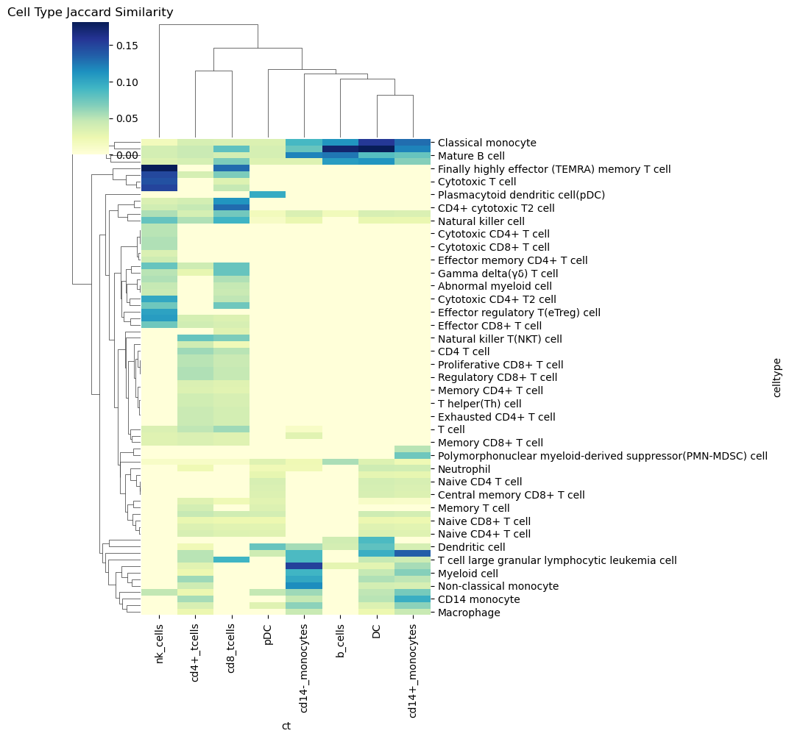
[ ]:
jaccards[jaccards.ct == 'b_cells'].boxplot(by='celltype', rot=90, figsize=(3,3))
<Axes: title={'center': 'jaccard'}, xlabel='[celltype]'>
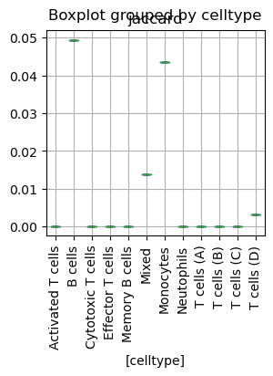
[ ]:
from scipy.cluster.hierarchy import fcluster
# 1. Extract the 2 top-level clusters
# 't=2' specifies the number of clusters
# 'criterion='maxclust'' ensures we get exactly 2 groups
cluster_labels = fcluster(Z, t=2, criterion='maxclust')
# 2. Map labels back to cell names
cluster_mapping = pd.DataFrame({
'cell_name': names,
'cluster_id': cluster_labels
})
# 3. View the groups
group_1 = cluster_mapping[cluster_mapping['cluster_id'] == 1]['cell_name'].tolist()
group_2 = cluster_mapping[cluster_mapping['cluster_id'] == 2]['cell_name'].tolist()
print(f"Group 1: {group_1}")
print(f"Group 2: {group_2}")
---------------------------------------------------------------------------
ValueError Traceback (most recent call last)
Cell In[265], line 9
6 cluster_labels = fcluster(Z, t=2, criterion='maxclust')
8 # 2. Map labels back to cell names
----> 9 cluster_mapping = pd.DataFrame({
10 'cell_name': names,
11 'cluster_id': cluster_labels
12 })
14 # 3. View the groups
15 group_1 = cluster_mapping[cluster_mapping['cluster_id'] == 1]['cell_name'].tolist()
File /data_nfs/og86asub/netmap/netmap-evaluation/netmap/.pixi/envs/default/lib/python3.12/site-packages/pandas/core/frame.py:782, in DataFrame.__init__(self, data, index, columns, dtype, copy)
776 mgr = self._init_mgr(
777 data, axes={"index": index, "columns": columns}, dtype=dtype, copy=copy
778 )
780 elif isinstance(data, dict):
781 # GH#38939 de facto copy defaults to False only in non-dict cases
--> 782 mgr = dict_to_mgr(data, index, columns, dtype=dtype, copy=copy, typ=manager)
783 elif isinstance(data, ma.MaskedArray):
784 from numpy.ma import mrecords
File /data_nfs/og86asub/netmap/netmap-evaluation/netmap/.pixi/envs/default/lib/python3.12/site-packages/pandas/core/internals/construction.py:503, in dict_to_mgr(data, index, columns, dtype, typ, copy)
499 else:
500 # dtype check to exclude e.g. range objects, scalars
501 arrays = [x.copy() if hasattr(x, "dtype") else x for x in arrays]
--> 503 return arrays_to_mgr(arrays, columns, index, dtype=dtype, typ=typ, consolidate=copy)
File /data_nfs/og86asub/netmap/netmap-evaluation/netmap/.pixi/envs/default/lib/python3.12/site-packages/pandas/core/internals/construction.py:114, in arrays_to_mgr(arrays, columns, index, dtype, verify_integrity, typ, consolidate)
111 if verify_integrity:
112 # figure out the index, if necessary
113 if index is None:
--> 114 index = _extract_index(arrays)
115 else:
116 index = ensure_index(index)
File /data_nfs/og86asub/netmap/netmap-evaluation/netmap/.pixi/envs/default/lib/python3.12/site-packages/pandas/core/internals/construction.py:677, in _extract_index(data)
675 lengths = list(set(raw_lengths))
676 if len(lengths) > 1:
--> 677 raise ValueError("All arrays must be of the same length")
679 if have_dicts:
680 raise ValueError(
681 "Mixing dicts with non-Series may lead to ambiguous ordering."
682 )
ValueError: All arrays must be of the same length
[ ]:
[ ]:
df, Z = get_hierarchical_clustering_from_sim(sim_matrix, names)
plot_scatter_plot(df)
cutoff = compute_regression(df, 1.4, dist_linkage = Z, correlation_threshold=0.2)
[ ]:
from statsmodels.formula.api import quantreg
from scipy.cluster import hierarchy
clusters = hierarchy.fcluster(Z, t=1.2, criterion='distance')
dfclu = pd.DataFrame({'index':names, 'cluster' : clusters})
dfclu = dfclu.set_index('index')
[ ]:
| index | cluster | |
|---|---|---|
| 21 | Cytotoxic CD4+ T cell | 6 |
| 22 | Cytotoxic CD4+ T2 cell | 6 |
| 23 | Cytotoxic CD8 T cell | 6 |
| 71 | Terminal effector CD8+ T cell | 6 |
[ ]:
# 1. Prepare Data & Compute Jaccard Index
# Grouping markers into sets per cell type
cm = cellmarker[(cellmarker.tissue_type.isin(['Peripheral blood', 'Blood'])) & (cellmarker.species.isin(['Human']))]
marker_sets = cm.groupby('cell_name')['marker'].apply(set).to_dict()
names = list(marker_sets.keys())
topg = set(bcrank[0:20].gene)
def jaccard_similarity(set1, set2):
intersection = len(set1.intersection(set2))
union = len(set1.union(set2))
return intersection / union if union > 0 else 0
# Create similarity matrix
n = len(names)
sim_liste = {}
for j in marker_sets:
sim_liste[j] = jaccard_similarity(topg, marker_sets[j])
[ ]:
[ ]:
sim_liste
| celltype | jaccard | |
|---|---|---|
| 0 | Activated T cells | 0.000000 |
| 1 | B cells | 0.005263 |
| 2 | Cytotoxic T cells | 0.150000 |
| 3 | Effector T cells | 0.000000 |
| 4 | Memory B cells | 0.000000 |
| 5 | Mixed | 0.006849 |
| 6 | Monocytes | 0.030675 |
| 7 | Neutophils | 0.000000 |
| 8 | T cells (A) | 0.035714 |
| 9 | T cells (B) | 0.000000 |
| 10 | T cells (C) | 0.035714 |
| 11 | T cells (D) | 0.029221 |
[ ]:
[ ]:
dfclu[dfclu.cluster==10]
| index | cluster | |
|---|---|---|
| 3 | CD3/CD28-stimulated NK cell | 10 |
| 11 | CD56+ natural killer cell | 10 |
| 24 | Cytotoxic CD8+ T cell | 10 |
| 30 | Effector CD8 T cell | 10 |
| 36 | Effector regulatory T(eTreg) cell | 10 |
| 39 | Finally highly effector (TEMRA) memory T cell | 10 |
| 41 | Lymphocyte | 10 |
[ ]:
<Axes: title={'center': 'jaccard'}, xlabel='[celltype]'>
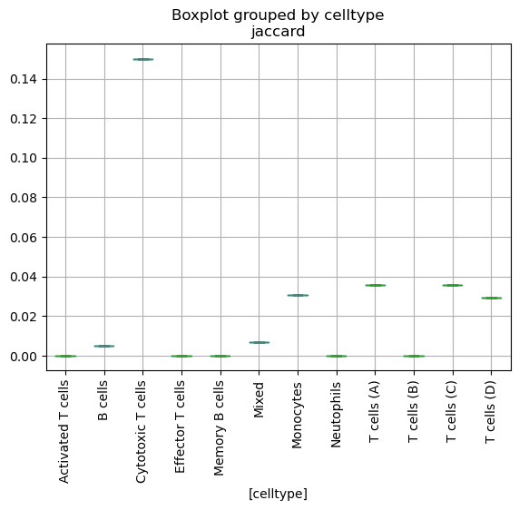
[ ]:
for clu in dfclu.cluster.unique():
for ct in dfclu[dfclu.cluster == clu].index:
print(ct)
Activated CD4+ T cell
CD4+ central memory like T (Tcm-like) cell
CD4+ cytotoxic T1 cell
CD4+ cytotoxic T2 cell
Naive CD4+ T cell
Naive CD8+ T cell
Activated CD8+ T cell
CD4+ T cell
CD4+ recently activated effector memory or effector T cell (CTL)
CD8+ T cell
CD8+ mucosal-associated invariant T cell(CD8+ MAIT)
CD8+ recently activated effector memory or effector T cell (CTL)
Cytotoxic T cell
Effector CD4+ T cell
Effector CD8+ T cell
Gamma delta(γδ) T cell
Memory CD8 T cell
Memory CD8+ T cell
Natural killer T(NKT) cell
Natural killer cell
T cell
Activated T cell
CD8+ terminally differentiated effector memory re-expressing CD45RA T cell(CD8+ TEMRA)
Early activated CD4+ T cell
Early activated CD8+ T cell
Lymphoid cell
Pan-T cell
Proliferative T cell
Revertant memory CD8+ T(TEMRA) cell
T follicular helper(Tfh) cell
T helper 9(Th9) cell
CD3/CD28-stimulated NK cell
CD56+ natural killer cell
Cytotoxic CD8+ T cell
Effector CD8 T cell
Effector regulatory T(eTreg) cell
Finally highly effector (TEMRA) memory T cell
Lymphocyte
CD4 T cell
CD8 T cell
Exhausted CD4+ T cell
Exhausted CD8+ T cell
Proliferative CD4+ T cell
Proliferative CD8+ T cell
Regulatory CD4+ T cell
Regulatory CD8+ T cell
CD4+ T helper cell
Early effector T cell
Naive cytotoxic T cell
Cancer cell
Central memory T cell
Effector memory CD4 T cell
Effector memory CD4+ T cell
Effector memory CD8+ T cell
Effector memory T cell
Memory CD4+ T cell
Memory T cell
Mucosa-associated invariant T (MAIT) cell
Naive T(Th0) cell
T helper 17(Th17) cell
T helper 2(Th2) cell
T helper(Th) cell
Central memory CD4+ T cell
Central memory CD8+ T cell
Naive CD4 T cell
Cytotoxic CD4+ T cell
Cytotoxic CD4+ T2 cell
Cytotoxic CD8 T cell
Terminal effector CD8+ T cell
Responding conventional T cell
T cell large granular lymphocytic leukemia cell
T helper 1(Th1) cell
[ ]:
import pandas as pd
import numpy as np
import seaborn as sns
import matplotlib.pyplot as plt
from scipy.spatial.distance import pdist, squareform
from scipy.cluster.hierarchy import linkage, dendrogram
# 1. Prepare Data & Compute Jaccard Index
# Grouping markers into sets per cell type
cm = cellmarker[(cellmarker.tissue_type.isin(['Peripheral blood', 'Blood'])) & (cellmarker.species.isin(['Human'])) & (cellmarker.cell_name.isin(group_2))]
marker_sets = cm.groupby('cell_name')['marker'].apply(set).to_dict()
names = list(marker_sets.keys())
def jaccard_similarity(set1, set2):
intersection = len(set1.intersection(set2))
union = len(set1.union(set2))
return intersection / union if union > 0 else 0
# Create similarity matrix
n = len(names)
sim_matrix = np.zeros((n, n))
for i in range(n):
for j in range(n):
sim_matrix[i, j] = jaccard_similarity(marker_sets[names[i]], marker_sets[names[j]])
# 2. Compute Clustering
# Convert similarity to distance: Distance = 1 - Similarity
dist_matrix = 1 - sim_matrix
# Ensure it's a condensed distance matrix for scipy
condensed_dist = pdist(dist_matrix) # or use squareform if matrix is already distance-based
Z = linkage(squareform(dist_matrix), method='ward')
# 3. Show Heatmap with Dendrogram
df_sim = pd.DataFrame(sim_matrix, index=names, columns=names)
# Set aesthetic parameters for better readability
sns.set_theme(style="white")
sns.set_context("paper", font_scale=1.2)
# Create the clustermap
g = sns.clustermap(
df_sim,
row_linkage=Z,
col_linkage=Z,
cmap='viridis',
figsize=(20 ,20), # Increased size for better spacing
xticklabels=True, # Ensure all labels are shown
yticklabels=True,
dendrogram_ratio=0.15, # Shrink dendrogram to give more room to the heatmap
cbar_pos=(0.02, 0.8, 0.03, 0.15) # Move colorbar to avoid overlapping labels
)
# Rotate labels to prevent overlapping
plt.setp(g.ax_heatmap.get_xticklabels(), ha='right')
plt.setp(g.ax_heatmap.get_yticklabels(), rotation=0)
plt.show()
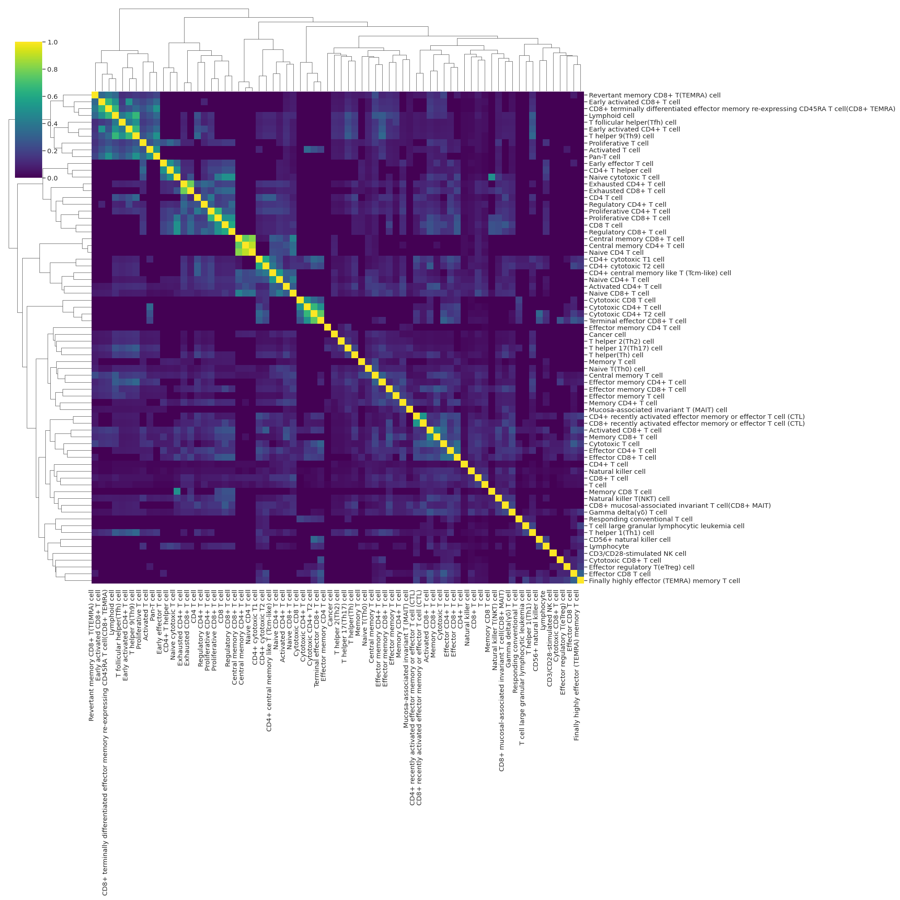
[ ]:
keep_edges['unique']['DC']['summary'][50:100]
| source | count | |
|---|---|---|
| 22 | IGF2BP2 | 30 |
| 33 | F13A1 | 30 |
| 254 | FBXL17 | 30 |
| 101 | COMMD1 | 30 |
| 106 | GPR183 | 30 |
| 104 | CASK | 30 |
| 216 | NIBAN1 | 30 |
| 214 | SLC9A9 | 30 |
| 127 | CCDC88A | 30 |
| 110 | FCER1A | 30 |
| 126 | CD2 | 30 |
| 228 | PID1 | 30 |
| 242 | ATR | 30 |
| 227 | CCSER2 | 30 |
| 240 | ACYP2 | 30 |
| 238 | AHCYL2 | 30 |
| 236 | SHPRH | 30 |
| 246 | CYFIP2 | 30 |
| 136 | MAML3 | 30 |
| 137 | NEGR1 | 30 |
| 191 | SPATS2L | 30 |
| 190 | ARHGAP21 | 30 |
| 185 | DISC1 | 30 |
| 183 | ACBD6 | 30 |
| 182 | TBC1D12 | 30 |
| 181 | NAV1 | 30 |
| 176 | DUSP2 | 30 |
| 145 | PTMS | 30 |
| 143 | EGR1 | 30 |
| 139 | CCNH | 30 |
| 147 | LGR6 | 30 |
| 202 | FAF1 | 30 |
| 195 | CMAHP--chr6:25061611(-) | 30 |
| 205 | VTI1A | 30 |
| 6 | TLR10 | 29 |
| 21 | NR4A1 | 29 |
| 159 | SBF2 | 29 |
| 134 | ARHGAP26 | 29 |
| 20 | ADGRE2 | 29 |
| 343 | LDLRAD4 | 29 |
| 4 | CDKN1A | 29 |
| 26 | RGS1 | 29 |
| 149 | CHN2 | 29 |
| 103 | CCDC50 | 29 |
| 239 | PDE4B | 29 |
| 129 | SLC4A7 | 29 |
| 49 | SLC16A7 | 29 |
| 287 | GNG7 | 29 |
| 35 | PALM2AKAP2 | 29 |
| 322 | PHACTR2 | 29 |
[ ]:
re = keep_edges['unique']['cd14+_monocytes']['edges']
gene = 'RBP7'
re_sub = re[re.source == gene]
edges = re_sub.source + '_' + re_sub.target
[ ]:
re = keep_edges['unique']['cd4+_tcells']['edges']
gene = 'RPS19'
re_sub = re[re.source == gene]
edges = re_sub.source + '_' + re_sub.target
[ ]:
#grn_adata3.layers['masked_data'] = np.multiply(grn_adata3.layers['mask'], grn_adata3.X)
grn_adata3.obsm['umap_GEX'] = adata_raw.obsm['X_umap']
sc.pl.embedding(grn_adata3, color = list(edges)+['celltype_semi_manual'], basis='umap_GEX')
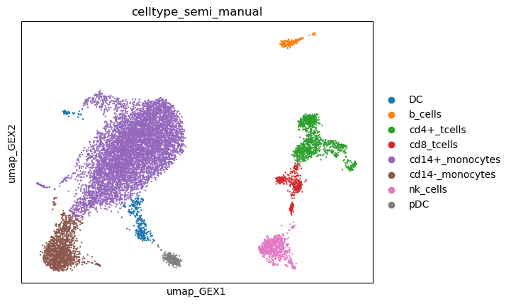
[ ]:
sc.pl.umap(adata_raw, color = [gene]+list(re_sub.target))
---------------------------------------------------------------------------
KeyError Traceback (most recent call last)
Cell In[40], line 1
----> 1 sc.pl.umap(adata_raw, color = [gene]+list(re_sub.target))
File /data_nfs/og86asub/netmap/netmap-evaluation/netmap/.pixi/envs/default/lib/python3.12/site-packages/scanpy/plotting/_tools/scatterplots.py:707, in umap(adata, **kwargs)
648 @_wraps_plot_scatter
649 @_doc_params(
650 adata_color_etc=doc_adata_color_etc,
(...) 654 )
655 def umap(adata: AnnData, **kwargs) -> Figure | Axes | list[Axes] | None:
656 """Scatter plot in UMAP basis.
657
658 Parameters
(...) 705
706 """
--> 707 return embedding(adata, "umap", **kwargs)
File /data_nfs/og86asub/netmap/netmap-evaluation/netmap/.pixi/envs/default/lib/python3.12/site-packages/scanpy/plotting/_tools/scatterplots.py:269, in embedding(adata, basis, color, mask_obs, gene_symbols, use_raw, sort_order, edges, edges_width, edges_color, neighbors_key, arrows, arrows_kwds, groups, components, dimensions, layer, projection, scale_factor, color_map, cmap, palette, na_color, na_in_legend, size, frameon, legend_fontsize, legend_fontweight, legend_loc, legend_fontoutline, colorbar_loc, vmax, vmin, vcenter, norm, add_outline, outline_width, outline_color, ncols, hspace, wspace, title, show, ax, return_fig, marker, save, **kwargs)
267 for count, (value_to_plot, dims) in enumerate(zip(color, dimensions, strict=True)):
268 kwargs_scatter = kwargs.copy() # is potentially mutated for each plot
--> 269 color_source_vector = _get_color_source_vector(
270 adata,
271 value_to_plot,
272 layer=layer,
273 mask_obs=mask_obs,
274 use_raw=use_raw,
275 gene_symbols=gene_symbols,
276 groups=groups,
277 )
278 color_vector, color_type = _color_vector(
279 adata,
280 value_to_plot,
(...) 283 na_color=na_color,
284 )
286 # Order points
File /data_nfs/og86asub/netmap/netmap-evaluation/netmap/.pixi/envs/default/lib/python3.12/site-packages/scanpy/plotting/_tools/scatterplots.py:1227, in _get_color_source_vector(adata, value_to_plot, mask_obs, use_raw, gene_symbols, layer, groups)
1225 values = adata.raw.obs_vector(value_to_plot)
1226 else:
-> 1227 values = adata.obs_vector(value_to_plot, layer=layer)
1228 if mask_obs is not None:
1229 values = values.copy()
File /data_nfs/og86asub/netmap/netmap-evaluation/netmap/.pixi/envs/default/lib/python3.12/site-packages/anndata/_core/anndata.py:1351, in AnnData.obs_vector(self, k, layer)
1349 warnings.warn(msg, FutureWarning, stacklevel=2)
1350 layer = None
-> 1351 return get_vector(self, k, "obs", "var", layer=layer)
File /data_nfs/og86asub/netmap/netmap-evaluation/netmap/.pixi/envs/default/lib/python3.12/site-packages/anndata/_core/index.py:359, in get_vector(adata, k, coldim, idxdim, layer)
357 elif (in_col + in_idx) == 0:
358 msg = f"Could not find key {k} in .{idxdim}_names or .{coldim}.columns."
--> 359 raise KeyError(msg)
360 elif in_col:
361 return getattr(adata, coldim)[k].values
KeyError: 'Could not find key RPS19 in .var_names or .obs.columns.'
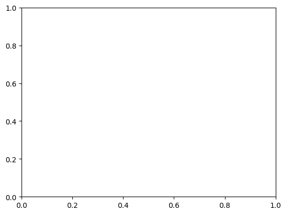
[ ]:
sc.pl.matrixplot(grn_adata3, list(edges), groupby='leiden_remap')
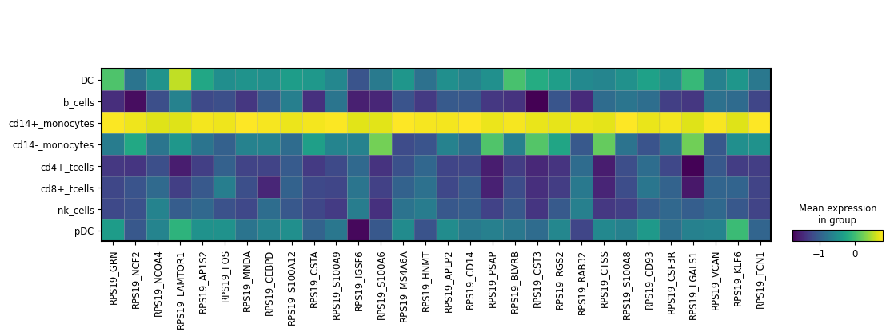
[ ]:
sc.pl.matrixplot(adata_raw, list(re_sub.target)+[gene], groupby='celltype_semi_manual' )
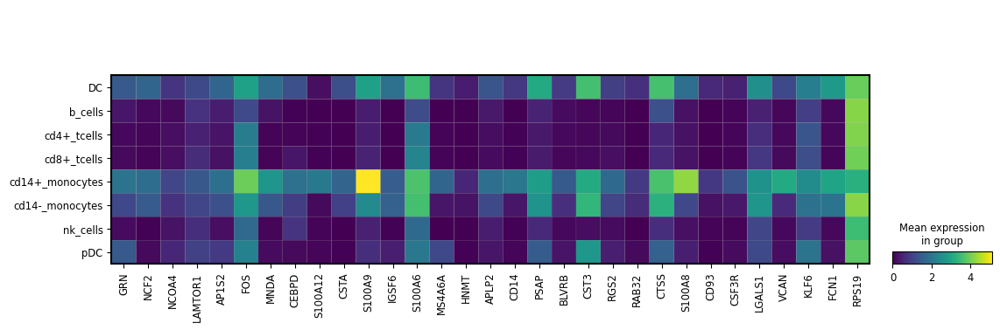
[ ]:
dff = sc.get.rank_genes_groups_df(adata_raw, group = 'cd14+_monocytes', key='wilcoxon')
dff[dff.names.str.startswith(("RPS", "RPL"))]
| names | scores | logfoldchanges | pvals | pvals_adj | |
|---|---|---|---|---|---|
| 462 | RPS6KA5 | -1.181993 | -0.325703 | 2.372083e-01 | 2.706030e-01 |
| 956 | RPL13 | -21.690722 | -0.395792 | 2.510213e-104 | 1.525552e-103 |
| 998 | RPS12 | -30.475519 | -0.597721 | 5.501034e-204 | 6.455812e-203 |
| 1003 | RPS18 | -31.942188 | -0.732257 | 6.935408e-224 | 9.317173e-223 |
| 1005 | RPS15A | -34.993374 | -0.640066 | 2.837660e-268 | 4.598811e-267 |
| 1006 | RPSA | -35.199284 | -1.581671 | 2.050760e-271 | 3.377139e-270 |
| 1008 | RPS4X | -36.782524 | -0.710438 | 3.513366e-296 | 6.522086e-295 |
| 1010 | RPL3 | -41.439777 | -1.252608 | 0.000000e+00 | 0.000000e+00 |
| 1011 | RPS5 | -42.679569 | -1.088508 | 0.000000e+00 | 0.000000e+00 |
| 1012 | RPS3 | -42.790997 | -0.939436 | 0.000000e+00 | 0.000000e+00 |
| 1013 | RPS27 | -43.003117 | -1.197766 | 0.000000e+00 | 0.000000e+00 |
| 1018 | RPS27A | -48.221794 | -0.975131 | 0.000000e+00 | 0.000000e+00 |
| 1020 | RPS19 | -58.531582 | -1.140079 | 0.000000e+00 | 0.000000e+00 |
[ ]:
# Plot a single regulon network
# Purpose:
# Visualize the regulatory network associated with a specific
# transcription factor (here: CEBPA). The plot typically includes
# the source regulator and its top downstream targets, allowing
# inspection of connectivity, target density, and regulatory structure.
os.makedirs('/data_nfs/og86asub/netmap/netmap-evaluation/results/case_studies/networks')
plot_reg(grn_adata3, regulon=["RASA2"], out_path='/data_nfs/og86asub/netmap/netmap-evaluation/results/case_studies/')
---------------------------------------------------------------------------
FileExistsError Traceback (most recent call last)
Cell In[290], line 8
1 # Plot a single regulon network
2 # Purpose:
3 # Visualize the regulatory network associated with a specific
4 # transcription factor (here: CEBPA). The plot typically includes
5 # the source regulator and its top downstream targets, allowing
6 # inspection of connectivity, target density, and regulatory structure.
----> 8 os.makedirs('/data_nfs/og86asub/netmap/netmap-evaluation/results/case_studies/networks')
9 plot_reg(grn_adata3, regulon=["RASA2"], out_path='/data_nfs/og86asub/netmap/netmap-evaluation/results/case_studies/')
File /data_nfs/og86asub/netmap/netmap-evaluation/netmap/.pixi/envs/default/lib/python3.12/os.py:225, in makedirs(name, mode, exist_ok)
223 return
224 try:
--> 225 mkdir(name, mode)
226 except OSError:
227 # Cannot rely on checking for EEXIST, since the operating system
228 # could give priority to other errors like EACCES or EROFS
229 if not exist_ok or not path.isdir(name):
FileExistsError: [Errno 17] File exists: '/data_nfs/og86asub/netmap/netmap-evaluation/results/case_studies/networks'
[ ]:
panaglao = pd.read_csv('/data_nfs/og86asub/netmap/netmap-evaluation/data/markers/panglaodb_human.csv')
[ ]:
panaglao[panaglao['Official gene symbol'] == 'RBP7']
| Species | Official gene symbol | Product type | Product description | UI | |
|---|---|---|---|---|---|
| 4973 | Homo sapiens | RBP7 | protein-coding gene | retinol binding protein 7 | 0.005 |
[ ]:
panaglao.iloc[np.where(panaglao['Product description'].str.contains('mitochon').values)[0]][0:50]
| Species | Official gene symbol | Product type | Product description | UI | |
|---|---|---|---|---|---|
| 2 | Homo sapiens | MT-RNR2 | non-coding RNA | mitochondrially encoded 16S RNA | 0.183 |
| 3 | Homo sapiens | MT-CO3 | protein-coding gene | mitochondrially encoded cytochrome c oxidase III | 0.182 |
| 5 | Homo sapiens | MT-CO1 | protein-coding gene | mitochondrially encoded cytochrome c oxidase I | 0.181 |
| 6 | Homo sapiens | MT-CO2 | protein-coding gene | mitochondrially encoded cytochrome c oxidase II | 0.181 |
| 19 | Homo sapiens | MT-ND4 | protein-coding gene | mitochondrially encoded NADH:ubiquinone oxidor... | 0.179 |
| 34 | Homo sapiens | MT-CYB | protein-coding gene | mitochondrially encoded cytochrome b | 0.176 |
| 41 | Homo sapiens | MT-ND2 | protein-coding gene | mitochondrially encoded NADH:ubiquinone oxidor... | 0.175 |
| 45 | Homo sapiens | MT-ATP6 | protein-coding gene | mitochondrially encoded ATP synthase membrane ... | 0.174 |
| 49 | Homo sapiens | MT-ND1 | protein-coding gene | mitochondrially encoded NADH:ubiquinone oxidor... | 0.173 |
| 88 | Homo sapiens | ATP5E | protein coding gene | ATP synthase, H+ transporting, mitochondrial F... | 0.166 |
| 90 | Homo sapiens | MT-RNR1 | non-coding RNA | mitochondrially encoded 12S RNA | 0.166 |
| 95 | Homo sapiens | MT-ND5 | protein-coding gene | mitochondrially encoded NADH:ubiquinone oxidor... | 0.164 |
| 100 | Homo sapiens | MT-ND3 | protein-coding gene | mitochondrially encoded NADH:ubiquinone oxidor... | 0.162 |
| 104 | Homo sapiens | AC073861.1 | NaN | NaN | 0.160 |
| 107 | Homo sapiens | AC007969.1 | NaN | NaN | 0.159 |
| 108 | Homo sapiens | ATP5L | protein coding gene | ATP synthase, H+ transporting, mitochondrial F... | 0.158 |
| 125 | Homo sapiens | AC008038.1 | NaN | NaN | 0.150 |
| 126 | Homo sapiens | ATP5G2 | protein coding gene | ATP synthase, H+ transporting, mitochondrial F... | 0.150 |
| 133 | Homo sapiens | NDUFA4 | protein-coding gene | NDUFA4, mitochondrial complex associated | 0.147 |
| 134 | Homo sapiens | TOMM7 | protein-coding gene | translocase of outer mitochondrial membrane 7 | 0.146 |
| 139 | Homo sapiens | AC016739.1 | NaN | NaN | 0.142 |
| 140 | Homo sapiens | MT-ND6 | protein-coding gene | mitochondrially encoded NADH:ubiquinone oxidor... | 0.142 |
| 145 | Homo sapiens | AC024293.1 | NaN | NaN | 0.140 |
| 155 | Homo sapiens | AP005202.1 | NaN | NaN | 0.136 |
| 157 | Homo sapiens | AC116533.1 | NaN | NaN | 0.135 |
| 164 | Homo sapiens | AP001324.1 | NaN | NaN | 0.133 |
| 176 | Homo sapiens | AC073621.1 | NaN | NaN | 0.128 |
| 184 | Homo sapiens | AC008021.1 | NaN | NaN | 0.126 |
| 191 | Homo sapiens | C14ORF2 | NaN | NaN | 0.124 |
| 195 | Homo sapiens | AC022431.1 | NaN | NaN | 0.123 |
| 217 | Homo sapiens | AC012618.1 | NaN | NaN | 0.117 |
| 218 | Homo sapiens | ATP5G3 | protein coding gene | ATP synthase, H+ transporting, mitochondrial F... | 0.117 |
| 219 | Homo sapiens | ATP5J | protein coding gene | ATP synthase, H+ transporting, mitochondrial F... | 0.117 |
| 232 | Homo sapiens | ATP5O | protein coding gene | ATP synthase, H+ transporting, mitochondrial F... | 0.113 |
| 245 | Homo sapiens | AC026403.1 | NaN | NaN | 0.110 |
| 262 | Homo sapiens | ATP5B | protein coding gene | ATP synthase, H+ transporting mitochondrial F1... | 0.106 |
| 270 | Homo sapiens | FO393411.1 | NaN | NaN | 0.105 |
| 284 | Homo sapiens | AC010343.1 | NaN | NaN | 0.102 |
| 295 | Homo sapiens | ATP5A1 | protein coding gene | ATP synthase, H+ transporting, mitochondrial F... | 0.100 |
| 302 | Homo sapiens | ATP5D | protein coding gene | ATP synthase, H+ transporting, mitochondrial F... | 0.098 |
| 353 | Homo sapiens | C14ORF166 | NaN | NaN | 0.090 |
| 362 | Homo sapiens | ATP5J2 | protein coding gene | ATP synthase, H+ transporting, mitochondrial F... | 0.088 |
| 373 | Homo sapiens | AC074033.1 | NaN | NaN | 0.087 |
| 389 | Homo sapiens | AC026366.1 | NaN | NaN | 0.085 |
| 390 | Homo sapiens | AC096919.1 | NaN | NaN | 0.085 |
| 409 | Homo sapiens | ATP5C1 | protein coding gene | ATP synthase, H+ transporting, mitochondrial F... | 0.082 |
| 422 | Homo sapiens | MRPS21 | protein-coding gene | mitochondrial ribosomal protein S21 | 0.081 |
| 434 | Homo sapiens | AC079250.1 | NaN | NaN | 0.079 |
| 437 | Homo sapiens | MRPL51 | protein-coding gene | mitochondrial ribosomal protein L51 | 0.079 |
| 446 | Homo sapiens | AC004453.1 | NaN | NaN | 0.077 |
[ ]:
panaglao[panaglao.UI<0.166]
| Species | Official gene symbol | Product type | Product description | UI | |
|---|---|---|---|---|---|
| 92 | Homo sapiens | BTF3 | protein-coding gene | basic transcription factor 3 | 0.165 |
| 93 | Homo sapiens | RPL23 | protein-coding gene | ribosomal protein L23 | 0.165 |
| 94 | Homo sapiens | RPSA | protein-coding gene | ribosomal protein SA | 0.165 |
| 95 | Homo sapiens | MT-ND5 | protein-coding gene | mitochondrially encoded NADH:ubiquinone oxidor... | 0.164 |
| 96 | Homo sapiens | RPL26 | protein-coding gene | ribosomal protein L26 | 0.164 |
| ... | ... | ... | ... | ... | ... |
| 19299 | Homo sapiens | LINC01709 | non-coding RNA | long intergenic non-protein coding RNA 1709 | 0.000 |
| 19300 | Homo sapiens | LINC01743 | non-coding RNA | long intergenic non-protein coding RNA 1743 | 0.000 |
| 19301 | Homo sapiens | LINC01744 | non-coding RNA | long intergenic non-protein coding RNA 1744 | 0.000 |
| 19302 | Homo sapiens | LINC01747 | non-coding RNA | long intergenic non-protein coding RNA 1747 | 0.000 |
| 19303 | Homo sapiens | LINC01753 | non-coding RNA | long intergenic non-protein coding RNA 1753 | 0.000 |
19212 rows × 5 columns